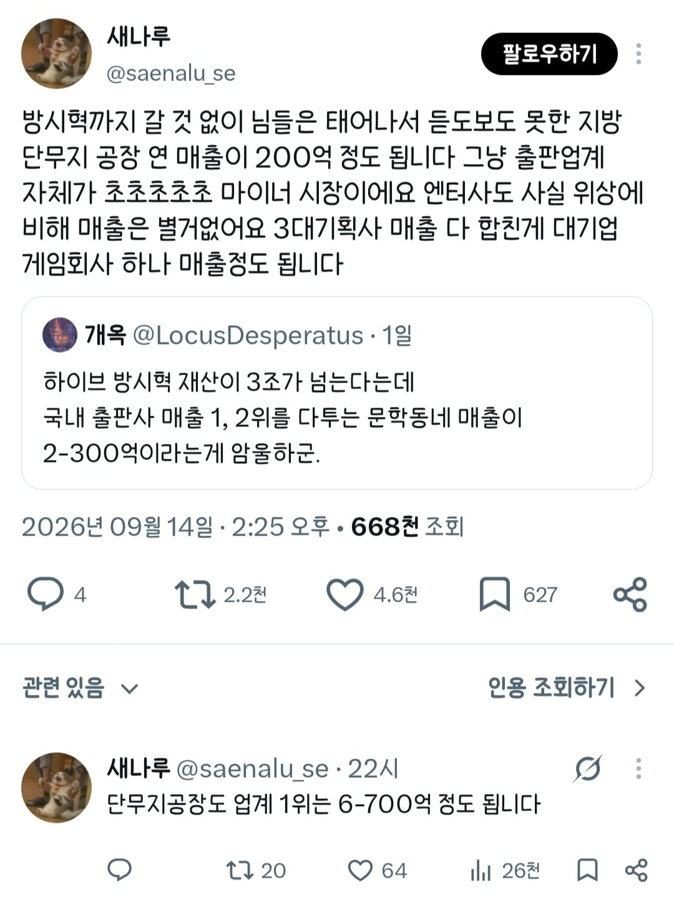

국내 1,2위를 다투는 출판사 매출이 2~300억인데 출판사 매출은 단무지공장 매출보다 못하다는 트위터 유저의 말은 사실일까?
단무지, 절임류 국내 점유율 1위 기업 일미농수산 매출 650억
사실이었다!

국내 1,2위를 다투는 출판사 매출이 2~300억인데 출판사 매출은 단무지공장 매출보다 못하다는 트위터 유저의 말은 사실일까?
단무지, 절임류 국내 점유율 1위 기업 일미농수산 매출 650억
사실이었다!
단무지 조스로 보이노?
나 연매출 900억회사 다녔었는데 작년에 파산함
살면서 처음으로 유통업계 간거였는데 이때 매출액이 중요치 않다는걸 깨달음
입사 전에도 유통업계가 순마진이 높지는 않다는건 알고 있었는데
진짜 단순하게 생각해서 인건비 줄 거 다 주고 나갈거 다나가고 딱 1퍼만 남더라도 법인에 떨어지는 순이익은
9억은 되지 않을까? 만약 0.5퍼만 남더라도 1년에 4억은 버는거 아닐까?
경영 잘해서 0.5퍼가 1퍼가되고,2퍼가 되고 점점 올라가다보면 훨씬 커지는거 아닌가?
설마 순이익이 마이너스겠어 ㅋㅋ 라고 생각했는데 진짜 마이너스였고 파산했음
위에 기업도 사원수가 180명임
진짜 최저로 사람만 굴린다고 쳐도
250만원 * 180명 = 월 4.5억임
공장은 조상님이 돌려주는거 아니니 다른거 차치하더라도
매출 650억에 영익 4% = 연간 25억
두세달 휘청 거리면 회사 부도나는거 한순간
얘기가 나와서 말인데 작가들이 오히려 도정제 찬성함
왜냐면 어차피 사는 사람들은 투덜대면서도 책 계속 사거든
근데 도정제 없앤다고 이미 좆망한 딱히 책 판매량이 유의미하게 늘지도 않을텐데 작가들 수입은 더 줄어듦
작가들이 병신이라 도정제 폐지 반대하는게 아님
문학동네 민음사 같은 데가 위상이 높은 거지 매출이 높은 게 아니야. 출판업계 1위는 웅진이고 매출이 6천억 원대다. 소설 등 단행본 내는 출판사는 순위권 근처 비비지도 못한다.
이게 되게 안타까운 현상인 건 맞다. 교재만 엄청나게 팔린다는 의미고, 아이들이 그 많은 교재를 시뻘건 눈으로 들여다보는 동안 소위 '책'은 팔릴 수가 없었다는 의미니까.
매출은 ㅈ도 의미없는데
매출로는 아마존이 애플, 엔비 다 처바른다